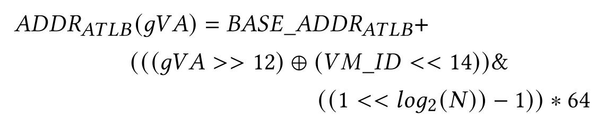
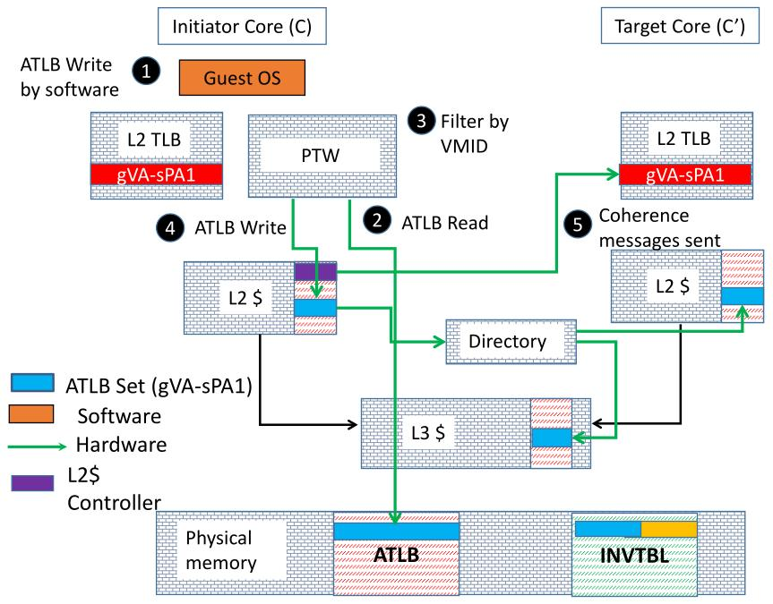
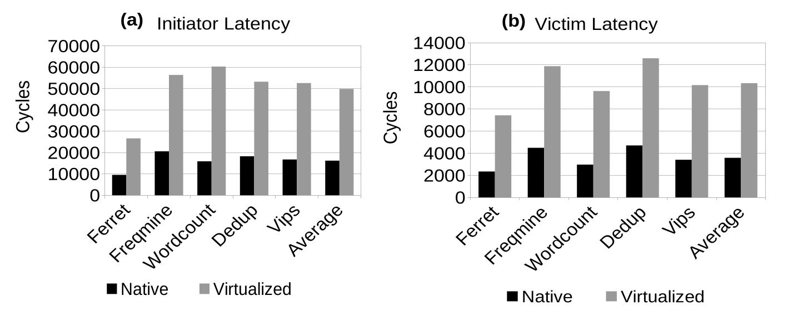
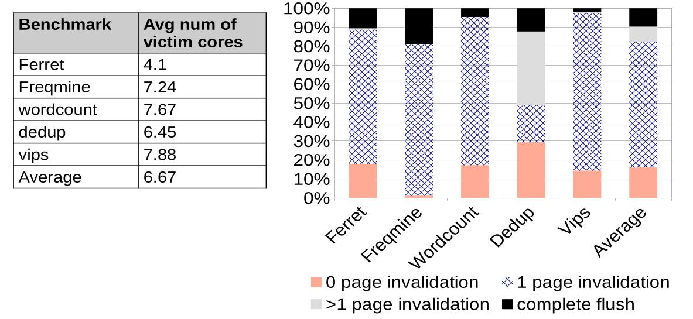

ATTC (@C) : Addressable-TLB based Translation Coherence
Harsh Gugale¹ Nagendra Gulur² Yashwant Marathe¹ Lizy K. John¹
¹University of Texas at Austin
²University of North Texas
TLB Shootdown
Happens whenever OS updates page tables
Stale TLB entries have to be invalidated
Uses Inter Processor Interrupt to update remote cores
Synchronous (Needs acknowledgements)
Important for Page remappings in Heterogeneous memory
Software (OS) performs TLB shootdowns
Virtualized systems
Shootdowns has to be sent to vCPUs
The receiver vCPU might not be scheduled and may delay acknoledgement
Both host and guest page table updates causes shootdowns
IPIs in Virtualized systems involves Hypervisor intervention
ATTC : Addressable-TLB based Translation Coherence
Hardware based translation coherence
Consists of two components
ATLB Addressible-TLB
INVTBL Inverse table
ATLB Addressable-TLB
TLB in memory
Organized as a set associative cache
Each set is 64B and contains 4 gVA -> sPA PTEs
If there are N sets in the ATLB

Modification to cache coherence protocol
ATLB cache blocks can be cached in Data caches
Cache blocks are invalidated
Private TLBs are also evicted
Coherence message to TLB sends ATLB set
By constructing the TLB set using the ATLB set
Partial gVA tag is used for matching
16MB ATLB give 14 bits of partial tag
Guest page table updates

INVTBL Inverse Table
Required for Host shootdowns
Set associative structure indexed by sPA
Each entry stores ATLB set that contains an entry pointing to the sPA
Used to track synonyms
Page table walker installs an entry whenever a Page Walk is complete
During Host shootdown, INVTBL is looked up and the correspoding entry in ATLB is invalidated
Invariant for correctness
Every entry in ATLB should have an entry in INLTBL
Otherwise an application might use old translation
Eviction in INVTBL causes evition in ATLB
Host page table updates
Lookup of INVTBL to get ATLB pointers
Writes to each of the ATLB pointers (Invalidation)
Causes upto 5 DRAM accesses
Time taken is 10-100x better than IPI shootdowns
Overheads and security
OS also writes to ATLB whenever it makes PTE changes
Hardware to detect ATLB and INVTBL range
Hardware modifications to PTW, Private TLBs
ATLB (16MB) and INVTBL (4MB) occupy DRAM space
Writes by Guest OS to ATLB is handled by Page table walker
Ensures that the Guest OS does not write to other VM's entries
Only Hypervisor can read or write to INVTBL
Evaluations
Using a trace based simulator
Use QEMU with KVM as the hypervisor
Use subset of PARSEC, Phoenix and NAS benchmarks
Compare with HATRIC and POMTLB
Measure latency of shootdowns with ftrace on real systems
Results - Latency study

Results - Shootdown study

Results
Initiator core latency depends on number of cores to which IPI is sent
Zero page invalidations are caused due to imprecise tracking of TLB entries
Increased invalidation latency doesn't degrade ATTC performance
ATLB has 93.1% hit rate on average
ATTC does give some improvement in Native systems
In native systems the INVTBL is not needed
Overall
ATTC performs better than HATRIC when guest initiated page table updates are more
35.7% performance improvement over baseline virtualized system
7.4% performance improvement over HATRIC
More beneficial for Virtualized and heterogeneous memory systems
Limitations
ATLB and INVTBL can be used for cache side channel attacks
Partial tag match can cause unnecessary evictions
Associativity of INVTBL gives upper limit on the number of Synonyms that can be cached